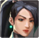
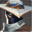

Sentinels
Sentinels er en agentklasse som betyr at agenten er god til å forsvare et sted. Agenter som tilhører denne klassen bør ikke dø på starten av runden, altså de bør ikke gjøre mange drap. Grunnen til dette er at egenskapene deres er veldig viktige for å vinne runden. Her kommer det også et uttrykk som kalles for en line-up. Det skal jeg forklare litt senere.
Egenskapen «Q» blir kastet på bakken og lager is på bakken som det er vanskelig å gå gjennom. Den lager høye lyder hvis noen prøver å passere den, og den gjør motstanderne veldig sakte. En god kombinasjon kan være Sage sin iskule og en dam/ild av lagkamerater som tar skade på motstandere. Hvis de blir kastet på samme sted, så kombineres deres effekter. Det er også mulig å finne måter å kaste kulene på, slik at du kan gjøre dette i en kamp. Dette kalles for en line-up. Du sikter på en eller annen pixel eller ting som du husket, og deretter treffer du for eksempel et sted som motstandere ofte står på. Dette må praktiseres mye for å kunne gjøre dette uten feil i en kamp. Du kan maksimalt eie 2 slike egenskaper og den koster 200.
Egenskapen som aktiveres med «E» kan gjenopprette liv for Sage eller en lagkamerat. Kan ikke brukes på motstandere og gir dem ingen effekt. Når Sage gjenoppretter liv for en lagkamerat eller for seg selv, så blir det gjenopprettet 50 hp på 10 sekunder. Denne egenskapen kan ikke gjenopprette skjoldet. Man kan høre at det er noen som gjenoppretter liv, så det er lurt å ikke angripe mens du får flere liv. Healingen stoppes hvis du får skade, og fortsetter litt etter at du slutter å få skade. Egenskapen gjenopprettes etter 45 sekunder.
Egenskapen «C» er en vegg som Sage kan lage. Den består av 4 deler som er uavhengige av hverandre. Altså, hvis den ene delen blir ødelagt så står fortsatt de andre delene. Det er den eneste veggen i spillet som det er ikke mulig å gå gjennom, og egenskaper går også ikke gjennom veggen, bare over. Veggen står 40 sekunder. De første 3 sekundene har den bare halvparten av livene sine, så det er ofte lurt å ødelegge den med en gang. Det er også mulig å sette veggen under seg selv for å stå oppå veggen. Dette er nyttig for å være på en uforventet plass. Det er også mulig å lage en Grim-wall. Det er en vegg som lar deg være i en ekstra uforventet posisjon. I noen tilfeller kan du være så høyt at motstanderne må se langt opp for å se deg. Grunnen til at slike vegger heter Grim-wall er at wall betyr vegg og Grim er navnet til den første personen som gjore slike vegger populære. Det er ofte vanskelig å sette slike vegger, så man må øve mye for å bli god til dette. Hvis man kombinerer Raze sin «Q» egenskap og Sage-veggen, så kan det være en veldig sterk kombinasjon. Veggen koster 400 og du kan eie bare en vegg.
Den ultimative egenskapen til Sage er helt unik. Hvis en lagkamerat døde, og Sage har 8 ultimative poeng, så kan hun gjenopplive en lagkamerat. Da har han 100 HP og han får automatisk en Classic pistol og eventuelt våpenet hans hvis det ikke ble tatt av noen andre. Den ultimative egenskapen krever 8 poeng.
Egenskapen «E» lager et kamera som kan settes hvor som helst, unntatt gulv og tak. Som vegger telles alle vegger og store nok bokser eller dekorative elementer. Kameraet blir ødelagt med en gang det blir skutt. Kameraet kan skyte en pil som viser posisjonen til motstanderen hvis den traff. Den tas lett vekk, det tar bare noen få sekunder. Kameraet lager også høye lyder når det aktiveres og lukkes. På grunn av at kameraet er nyttig å bruke for å sjekke store områder eller bare en bestemt gang, så bruker Cypher vanligvis å se gjennom kameraet nesten hele tiden. Man bør ikke la motstanderne legge merke til hvor kameraet er, slik at du kan samle så mye som mulig informasjon. Du må vente 15 sekunder hvis du har lyst å plassere kameraet et annet sted, men hvis en motstander ødela kameraet så må du vente hele 45 sekunder.
Egenskapen «Q» er en type tåke, men uten tak. Cypher sin tåke kalles oftest for en «cage», altså et bur. Når noen går inn/ut av buret, så lages det en høy lyd. Et bur kan ikke ødelegges, den kan bare omplasseres før runden begynner. Et bur kan også fungere som en one-way, men da må man ha en egen line-up for one-wayen fordi Cypher sitt bur er den vanskeligste tåken med tanke på plasseringen. Buret koster 100 og Cypher kan eie 2 bur.
Egenskapen «C» er en felle som plasseres mellom to vegger. Den blir synlig bare hvis man kommer nærme fellen. Den ødelegges av et treff. Hvis noen kommer på fellen, så kan ikke motstanderen gå langt unna sentrumet av fellen. Samtidig lyser motstanderen for alle dine lagkamerater. For å slippe seg fri fra fellen så må du ødelegge den, men vanligvis blir du drept før du reagerer. Derfor kan det være lurt å skyte på steder hvor det kan være feller. Hvis du er heldig, så ødelegger du en eller flere feller. En felle koster 200 og Cypher kan eie 2 feller.
Den ultimative egenskapen aktiveres med 6 poeng og viser posisjonen til alle motstanderne. Varigheten på den ultimative egenskapen er på noen sekunder. For å aktivere egenskapen må Cypher finne en død motstander og bruke egenskapen sin der.
Egenskapen «E» setter et tårn som skyter på motstandere som det ser. Det tar lite skade, men er egentlig laget for innsamling av informasjon og til å distrahere motstanderen slik at det blir enkelt å drepe ham. Når man angriper bør man sette tårnet bakerst for å få informasjon om dem som prøver å komme bak laget deres. Killjoy kan plassere et tårn og for å plassere tårnet et annet sted må Killjoy vente 20 sekunder. Hvis tårnet ble ødelagt av en motstander må hun vente 45 sekunder for å plassere tårnet på nytt.
Egenskapen «Q» er en alarmbot som hopper på motstanderen som kommer for nærme. Hvis den ikke blir ødelagt før den hopper på motstanderen, så gir den en effekt som kalles for «sårbar». Den gjør motstanderen sårbar mot hvilken som helst type skade og effekten varer 5 sekunder. Hvis noen skyter på deg, så får du dobbelt så mye skade. Du kan maksimalt eie en robot og den koster 200. Hvis du vil plassere roboten et annet sted, så må du vente 20 sekunder.
Egenskapen «C» plasserer en granate som du kan aktivere senere. Hvis du aktiverer granaten: Granaten skaper en sirkel rundt seg med 2 meters radius. Hvis noen står i sirkelen, så tar han mye skade. Når man angriper, så plasserer man gjerne granaten på bomben med en line-up. Dette øker sannsynligheten for at ingen ødelegger granaten før de skrur av bomben. Killjoy kan maksimale eie to granater og hver av dem koster 200.
Den ultimative egenskapen plasserer et tårn som aktiveres etter 8 sekunder og fryser alle som står i <30 meters avstand fra tårnet. Tårnet kan ødelegges, men det blir ofte plassert på en trygg plass slik at det blir vanskeligere å ødelegge tårnet. Tårnet krever 7 poeng.
Initiators er agentklassen som betyr at agenten har en evne til å gjøre raske hendelser. De kan ha egenskapene til andre klasser, for eksempel være tilpasset for dueller og skytekamper, men samtidig ha egenskaper som kan være nyttige i individuelle situasjoner. Agentene som er under denne klassen er spesielt gode på å få vekk motstandere fra noen posisjoner og angripe dem.
Egenskapen «E» setter en ting som teleporterer karakteren til det stedet. Denne kan ødelegges. Det er mulig å sette denne to ulike steder. Karakteren teleporteres alltid til den teleporterings-tingen som er lengst unna fra karakteren.
Egenskapen «Q» er en bedre versjon av sheriff-pistol som ble lagt til spillet fordi mange var misfornøyd med sheriff-pistolen. Den nye sheriff pistolen som bare Chamber kan bruke tar like mye skade som den vanlige, men den dreper med et skudd i hodet på alle avstander, mens den vanlige tar 145 skade. Samtidig har den vanlige sheriff pistolen noen ekstra skudd, mens den Chamber har kan bare skyte 8 skudd. Hvert skudd koster 100. I tillegg er det mulig å sikte med Chamber sin sheriff og den kan man skyte med raskere hvis man gjør en «strafe».
Egenskapen «C» er en felle som aktiveres på samme måte som killjoy-fellen, men den har en annen funksjon. Chamber sin felle lager et stort område hvor agenten kan bevege seg bare veldig sakte.
Den ultimative egenskapen er en Operator/AWP som trenger mindre stoppe-tid til å skyte, altså du trenger ikke å stanse helt for å skyte. Den har ikke et svart område rundt siktepunktet. Den har bare 10 skudd. Samtidig lager denne en effekt av «C» egenskapen under personen som du drepte.
Killjoy
Cypher
Sage

Chamber
